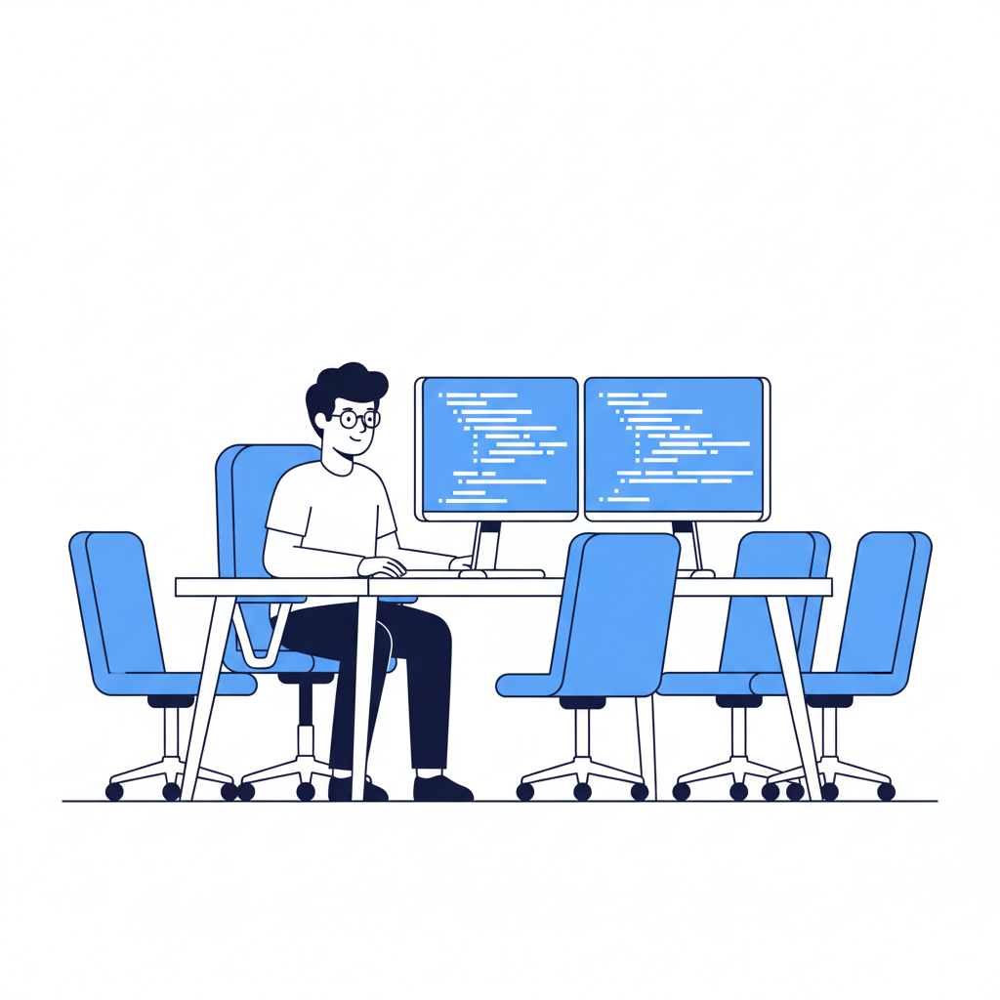
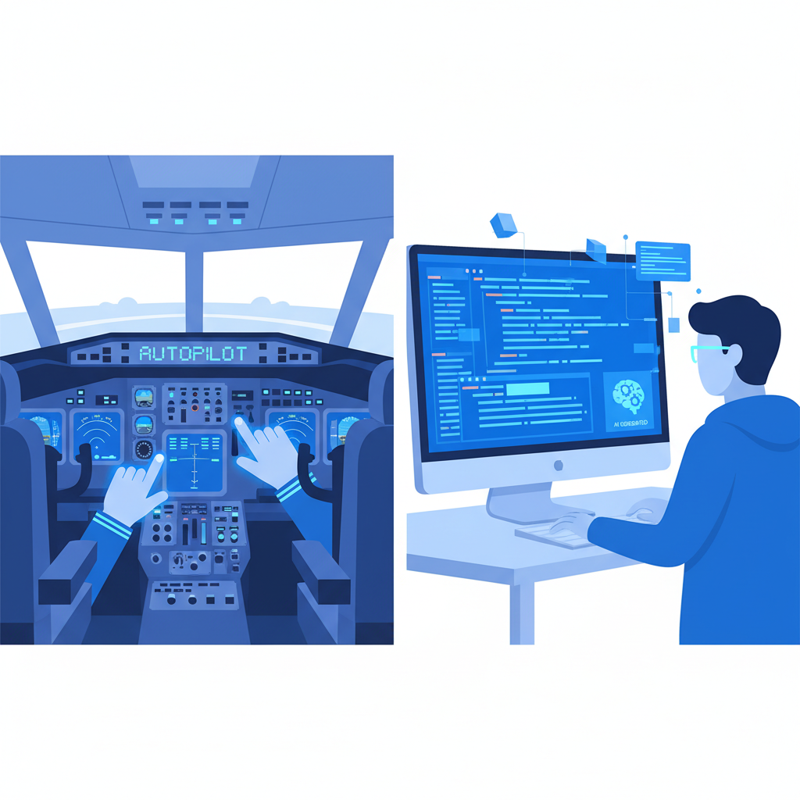

一个"代理人"的工作日
旧金山South of Market区，某科技公司的开放式办公室里，一个24岁的初级工程师坐在两块屏幕前。左边是Slack，经理发来一段需求描述；右边是终端窗口，Claude Code的光标在闪烁。
他的工作流程是这样的：读需求，把需求翻译成一段Prompt，回车，等待，审查生成的代码，提交Pull Request。全程不超过40分钟。两年前，同样的任务需要他花大半天写代码、查文档、debug、再重构。
他管自己叫"代理人"——经理告诉他做什么，他告诉Claude去做。接受《旧金山标准报》匿名采访时，他说了一句让记者停笔的话："我大概只理解自己产出的一半。"
这不是个例。Anthropic的CEO Dario Amodei在2026年1月的达沃斯论坛上说，他自己公司的工程师已经不再从零写代码了——他们生成、审查、修补。Meta的扎克伯格预测，到2026年年中，AI将编写Meta的大部分代码。工程师的工作正从"写代码"变成"指挥AI写代码"。
过去，程序员花80%的时间写代码，20%的时间做设计。现在翻过来了：几乎没人手写代码。
这听起来像是效率革命。但问题在别处。
美国15家最大科技公司的应届生招聘自2019年以来下降了55%。初级开发者的岗位发布量自2024年初减少了40%到50%。一份针对1000名美国企业高管的调查显示，六成公司计划在2026年裁员，四成计划用AI替代被裁的人。Anthropic自己的研究也承认，AI可以覆盖程序员74.5%的工作任务，初级岗位的替代率超过85%。
那个24岁的"代理人"暂时还有工作。但他周围的空位越来越多。他入职时的同期校招生有8人，现在只剩3人。另外5人的岗位没有被回填——被砍掉了。
他不太担心被AI替代。他担心的是另一件事：自己越用AI越快，却越来越不懂自己到底在做什么。

断梯
讨论AI对程序员的影响时，绝大多数声音在争论同一个问题：AI能不能替代程序员？
乐观派说不能——AI写不了架构，做不了产品决策，不懂业务。悲观派说能——给它足够的上下文，它什么都能写。双方吵得热闹，但都盯着同一扇门。
没人注意到旁边还有一道正在关闭的门：通往"高级工程师"的那条路。
高级工程师不是从天上掉下来的。他们是从前的初级工程师，花了5到10年，在生产环境里踩坑、改bug、被Code Review骂、自己重构三遍才勉强及格，一点一点磨出来的。软件工程有一个不成文的规律：这种判断力——业内叫"系统品味"——只能在实战中习得，不能通过阅读文档或审查别人的代码替代。
现在这条路正在坍塌。
数字说得最直接。哈佛大学的一项研究发现，GPT-4发布后，22至25岁人群在AI敏感岗位（包括软件开发）的就业下降了约13%。更细分的数据更惊人：自2022年以来，美国初级开发者岗位的招聘量下降了67%。
UC Berkeley的情况是一面镜子。这所全球排名前列的计算机科学院系，2026-27学年的CS专业入学人数预计比上一年暴跌59%。系主任Jelani Nelson透露，到2027年，预计毕业的CS学生只有约350人——2024-25学年是1029人。整个加州大学系统的CS专业注册人数在2025年出现了21世纪以来的首次下降，同比减少6%。
不是因为计算机科学变得不重要了。是因为年轻人看到了前方的路断了。
AI工具能写代码，企业不需要雇人来写。代码训练营的就业率暴跌。CS毕业生找到第一份工程师工作的时间显著延长，越来越多人转向了产品经理、QA或技术写作岗位。那条从"写第一行Hello World"到"设计一个承载百万用户的系统"的阶梯，正在一级一级消失。
行业研究者把这叫做"人才管道死亡螺旋"。它有五个阶段：企业停止招聘初级工程师→3到5年后中层人才稀缺→高级工程师退休或倦怠离开→剩余高级工程师薪资暴涨→无人理解遗留系统。
每个阶段都很安静。到最后一步暴露的时候，前面四步已经不可逆了。
飞行员已经走过这条路
软件行业不是第一个面对这种困境的行业。航空业三十年前就开始经历类似的事情，结果不太好看。
现代民航客机的自动化程度极高。自动驾驶仪可以处理从起飞到降落的绝大多数操作，飞行员的日常工作越来越像"系统监控员"——读仪表、盯屏幕、在极少数情况下按一下按钮。
问题暴露在意外发生的时刻。当自动驾驶失灵、需要飞行员手动接管时，很多人发现自己的能力已经不够了。美国航空航天局（NASA）2014年的一项研究发现了一个出人意料的细节：飞行员的手动操纵能力——扫描仪表、控制飞行姿态——其实还在。退化最严重的是认知能力：在没有地图显示的情况下追踪飞机位置、决定下一步导航步骤、识别仪器故障。换句话说，不是手生了，是脑子不转了。
这和MIT关于ChatGPT使用者的研究结论高度吻合。MIT早期的一项研究发现，在写作任务中使用ChatGPT辅助的成年人，脑活动水平降低，事后回忆能力更差。研究者称之为"认知债务"——工具代替了思考过程，大脑放弃了那部分功能。
FAA的反应很说明问题。它没有说"自动化很好，飞行员以后就监控就行"。它发布了新的航空通告，明确要求航空公司在正常运营中让飞行员尽可能多地进行手动飞行。不是因为自动驾驶不好用，而是因为认知能力一旦退化，到需要它的时候就来不及了。
软件行业面对着同一道选择题。微软Azure CTO Mark Russinovich和副总裁Scott Hanselman发出了一个具体的警告：AI给高级工程师带来了巨大的生产力提升，但对初级工程师施加了一种"AI阻力"——因为他们缺乏判断力来引导、验证和整合AI的输出。
Amodei在达沃斯说AI将在12个月内编写所有代码时，他在推销一个产品。Russinovich在管理一支工程队伍时，看到的是另一面：AI让已经会飞的人飞得更快，同时让正在学飞的人失去了学会飞行的机会。

也许我们不需要旧的梯子？
有一种反驳是认真的，不能绕过去。
前特斯拉AI总监Andrej Karpathy一直在推广一种叫"Vibe Coding"的理念——你不需要理解每一行代码，只需要描述你想要什么，AI来实现。他认为这不是降低门槛，而是重新定义编程。在这种理解里，和AI协作写代码本身就是一种新的学习方式，相当于有一个永远在线的高级工程师在旁边做结对编程。
也许成为好工程师的路径不再是"先写烂代码再改好"，而是"先审好代码再理解为什么好"。也许学徒制不是被消灭了，只是形态变了。
这个逻辑在概念上说得通。但现有的证据不太支持。
回到那个旧金山的"代理人"。如果AI真的在教他，为什么他越用越不懂自己的产出？为什么是"理解一半"而不是"理解越来越多"？
Vibe Coding的安全数据也不乐观。网络安全公司Wiz的研究显示，20%的Vibe Coding产出的应用存在严重漏洞或配置错误。BaxBench基准测试和纽约大学的研究则发现，40%到62%的AI生成代码包含安全缺陷。这些代码通过了初步测试——它们"能跑"。但它们脆弱、混乱，在底层埋着跨站脚本攻击和SQL注入的种子。
问题的核心不是AI写的代码好不好。是审查这些代码需要的能力，恰恰是不写代码就培养不出来的那种能力。
但人类学家项飙可能会问一个不同方向的问题：你讨论的是谁的梯子？硅谷的精英工程师的成长路径，和班加罗尔、北京回龙观、武汉光谷的程序员的路径，是同一条吗？对于全球绝大多数程序员来说，AI编程工具可能是他们见过的最好的"师父"——一个不嫌你笨、不收学费、永远有耐心的导师。从这个角度看，"断梯"的叙事有可能变成精英守门人的话语。
这种张力是真实的。AI确实在降低编程的入门门槛，让更多人能"写"代码。但"能写代码"和"能构建不会在凌晨三点崩溃的系统"是两件事。UC Berkeley CS专业暴跌59%不是印度或中国的数据——它发生在全球科技金字塔的塔尖。当塔尖都在坍塌的时候，底部的"AI平民化"补得上吗？
这不是一个有标准答案的问题。但它是一个不能假装不存在的问题。
谁来修这条路
微软至少意识到了问题。Russinovich和Hanselman提出了一个叫"Preceptor制度"的方案——名字借自护理行业，意思是让初级工程师在真实的产品团队中与资深工程师配对，把学习变成一个明确的组织目标，而非附带产出。Hanselman说了一句话："就像护士需要证明临床能力，工程师也需要证明同样的东西。"
少数公司在尝试类似的事情。有团队开始设立"无AI编码日"，让年轻工程师定期在没有Copilot、没有Claude Code的环境下独立完成任务——不是因为怀旧，而是因为认知能力和肌肉记忆一样，不练就会丢。有些团队重新设计了Code Review流程，不再让初级工程师只看AI生成的diff，而是要求他们先手写一个方案，再和AI的版本比较——目的不是选哪个更好，而是让他们知道差距在哪里。
但这些是例外。绝大多数公司的选择是简单、理性、即时有效的：砍掉初级岗位，用省下来的钱买更多的AI工具许可证。9万美元的年薪换一个年费10美元的Copilot订阅。从季度报表来看，这是完美的决策。
研究者用一个短语概括了这种局面："个体理性，集体毁灭"。每家公司单独做的决定都说得通。但当所有公司同时做同一个决定时，整个行业的人才蓄水池就在悄悄干涸。没有哪家公司会因为"行业人才管道坍塌"来负责。这是一个典型的公地悲剧，只不过这片公地是全球软件工程师的培养体系。
有人会说，也许AI自己就能填上这个缺口。也许五年后的AI强到不需要人类工程师来做那些高难度的系统设计。也许"断梯"问题根本不会发生，因为梯子的另一端已经不需要人上去了。
也许。但航空业没有这样赌。FAA没有说"既然自动驾驶这么好，飞行员以后就不用练手动飞行了"。它做了相反的事：越是自动化，越要确保人类能在关键时刻接管。因为自动化系统会失败——不是"如果"，而是"什么时候"。
AI也会。它会在最关键的时刻生成看起来正确但实际上是错的代码。那时候需要有人能看出来。那个人从哪里来？他需要花5到10年磨出来。那条路不能断。
AI时代最稀缺的不是会用AI的人。是不用AI也行的人。